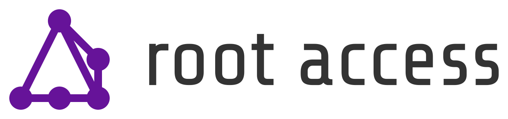

Member Handbook
a.k.a., How do we Hackerspace?
Welcome!
We’re thrilled to have you join our community. Our mission is to provide education and practical experience in all sorts of making and promote the same in the community. We aim to provide a hackerspace that serves all experience levels from hobbyists to professionals.
Our goal is to help you develop your skills and give you a space and tools to express them, while building a community that fosters a culture of inclusiveness and collaboration.
As part of our community, we want to make it easy to know what we’re about, what resources are available to you, what you should expect from the community, and what the community expects from you. This handbook has a lot of information in it. You really should read it. If you have questions, feel free to ask Root Access leadership - we are happy to discuss all of this. If something is missing, let us know that too.
Again, welcome to Root Access. We can’t wait to see what you make and how you help our community prosper.
The Basics
Root Access is a community that runs a hackerspace. You buy a monthly membership to gain access to the skill and expertise of the members, the shared space, and all the tools therein. You learn to safely use the tools provided and then use them to make things. You only use the tools you have been trained on to ensure the safety of everyone. We’re sort of like a gym for nerds.
This handbook describes policies and procedures that keep the hackerspace humming along. The core of this is simply safety and sharing. We want the members to be safe and to share what we have in a way that is equitable and sustainable.
If you’d like to learn more about Root Access – how we operate, what’s going on, specifics on tools, etc – you should check out our community wiki: wiki.rootaccess.org.
Contact Us
- Website
- Address
- Executive Director
Derek Payton (derek@rootaccess.org)
- Board of Directors
Find us online!
Colophon
This handbook is built with Sphinx. We’re using the Read The Docs theme and MyST for markdown parsing. Every commit triggers a Github Action to build and deploy the handbook to Github Pages.
View the source code on Github.
Many thanks to Maker Nexus in Sunnyvale, CA for licensing their own handbook under a Creative Commons license. Much of what’s in our handbook was seeded from theirs.